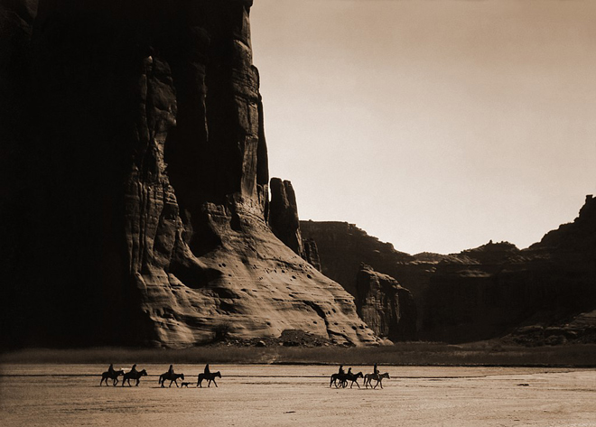
.
Canyon de Chelly National Monument was established in April 1931, as a unit of the National Park Service. Located in north-eastern Arizona, it is within the boundaries of the Navajo Nation and lies in the Four Corners region. Reflecting one of the longest continuously inhabited landscapes of North America, it preserves ruins of the indigenous tribes that lived in the area, from the Ancestral Puebloans (formerly known as Anasazi) to the Navajo.
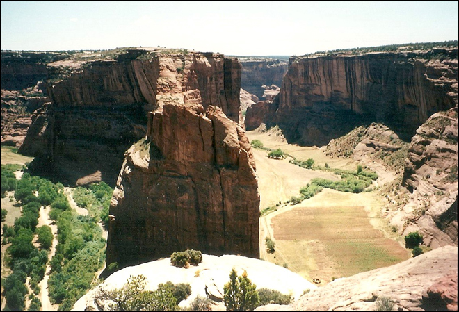
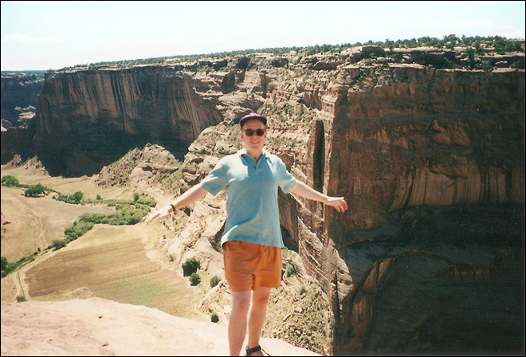
The Navajo people lived in Canyon de Chelly long before it was invaded by forces led by future New Mexico governor Lt. Antonio Narbona in 1805. In 1863, Col. Kit Carson sent troops through the canyon, killing 23 Indians, seizing 200 sheep and destroying hogans, as well as peach orchards and other crops. The resulting demoralisation led to the surrender of the Navajos and their removal to Bosque Redondo, New Mexico.
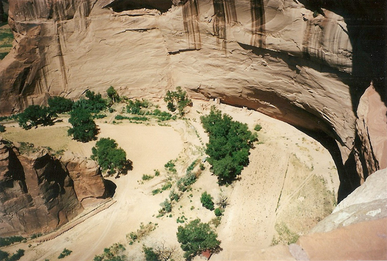
Canyon de Chelly is entirely owned by the Navajo Tribal Trust of the Navajo Nation. It is the only National Park Service unit that is owned and cooperatively managed in this manner. About 40 Navajo families live in the park. Access to the canyon floor is restricted, and visitors are allowed to travel in the canyons only when accompanied by a park ranger or an authorised Navajo guide.
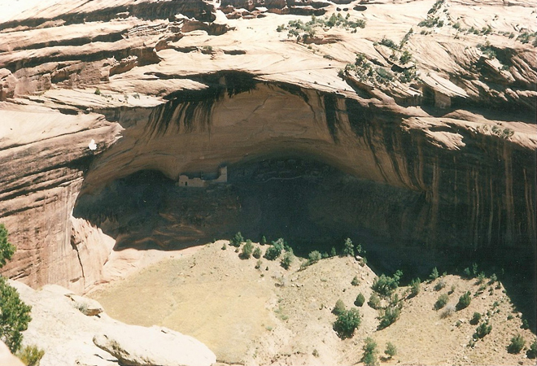
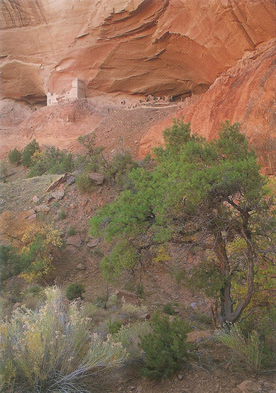
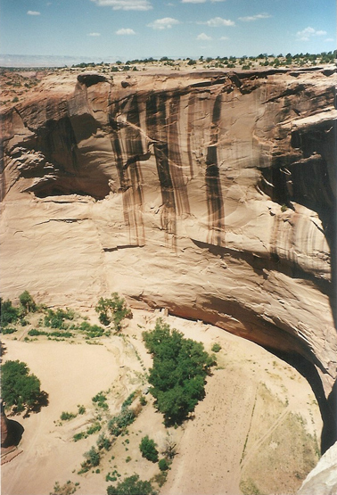
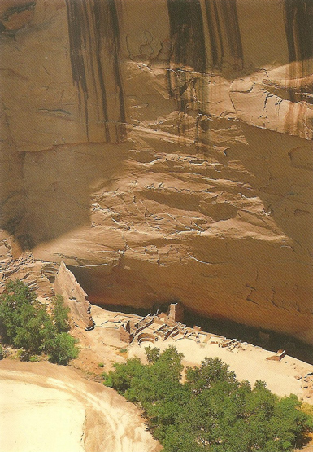
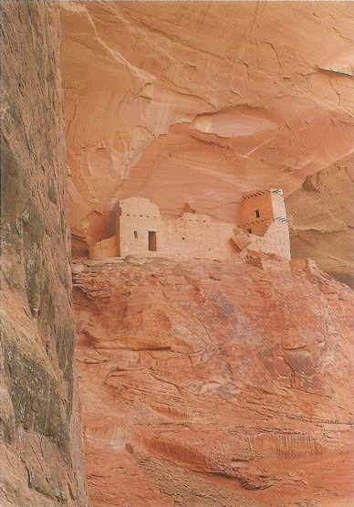
White House Ruin, (Timothy H. O'Sullivan, 1873) - an early photograph of the site and to the right, a happy traveller.
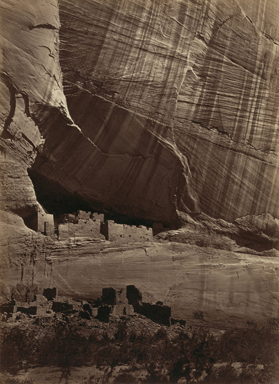
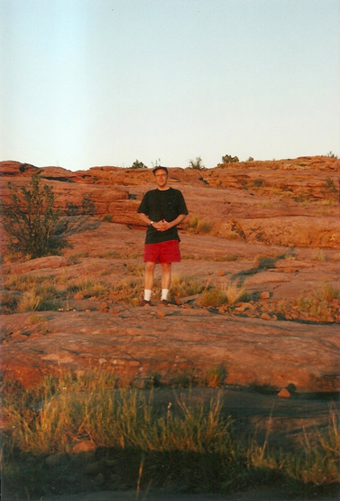